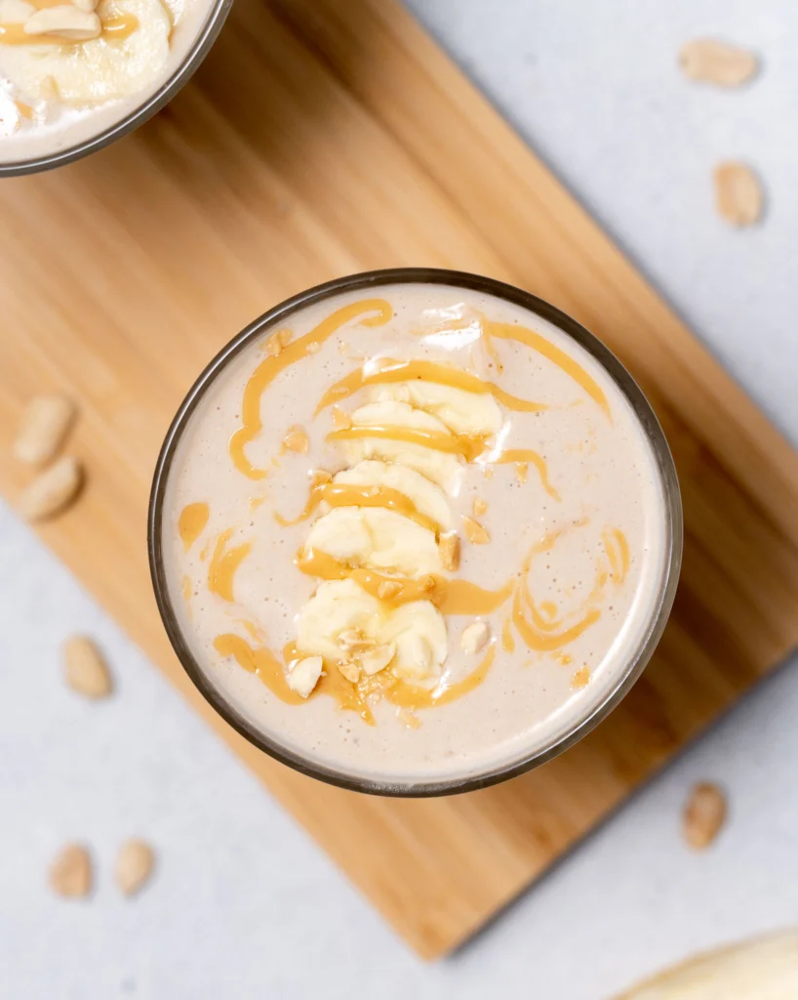

Peanut Butter Banana Smoothie

Summertime is the perfect time to enjoy smoothies for breakfast, and this Peanut Butter Banana Smoothie has been on repeat!
It’s a healthy smoothie recipe that’s ultra thick, easy to make, and tastes amazing. What more could you want?!
Whip this up in minutes, with just 5 ingredients (bananas, milk, peanut butter, honey, and oats). Great for hectic mornings when you are running out the door or for a quick snack!
Bananas: For best results, use frozen ripe bananas to ensure the smoothie is cold, thick, and has a natural sweetness.
Milk: We usually use unsweetened vanilla almond milk, but feel free to use any milk that you like.
Peanut butter: Creamy peanut butter adds tons of delicious flavor. To keep this recipe clean, use natural peanut butter. Alternatively, almond butter or another nut (or seed) butter may be substituted.
Sweetener:You can make this smoothie sweeter by adding honey or agave.
Oats:This will bulk up the smoothie and make it super thick.
HOW TO MAKE THIS RECIPE:
- Blend ingredients: In a high-powered blender, place the frozen bananas, milk, peanut butter, honey, and oats. Blend until smooth.
- Pouring milk into blender with banana slices.
- Adding peanut butter and oats to milk in a blender.
- Blended peanut butter smoothie.
- Check for consistency: If it is too thick to your liking, add another ¼ cup of milk and blend again.
- Enjoy: Serve in cups, and top with sliced banana and peanut butter drizzle. Other optional toppings: chocolate chips or roasted peanuts.
Nutrition:
Serving: 1smoothie | Calories: 387kcal | Carbohydrates: 56g | Protein: 13g | Fat: 16g |
Saturated Fat: 2g | Polyunsaturated Fat: 5g | Monounsaturated Fat: 7g |
Sodium: 440mg | Potassium: 705mg | Fiber: 6g | Sugar: 27g | Vitamin A: 76IU | Vitamin C: 10mg | Calcium: 249mg | Iron: 2mg
Back to main page